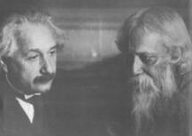
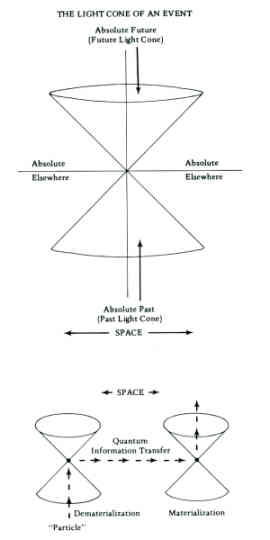
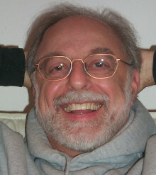
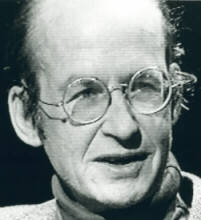
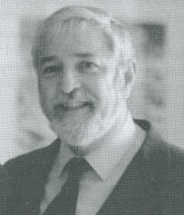
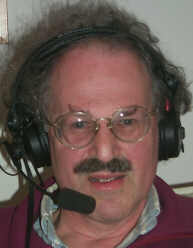
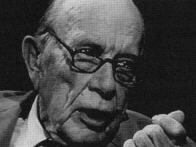

|
Space-Time According to Einstein The special theory of relativity, formulated by Albert Einstein in 1905, is based on the experimentally confirmed idea that the velocity of light is the same universal constant, c= 3x1010 cm./sec., for all observers who move uniformly in straight lines relative to each other. Consequently, Einstein's genius deduced that events which are simultaneous to one observer are not simultaneous to a second observer.  Nobel laureates Albert Einstein, scientist, and Rabindranath Tagore, mystical poet Furthermore, moving clocks run slow. Moving measuring sticks contract in length along the direction of motion. Energy is equivalent to mass -- i.e. E = mc2. And the mass of a particle increases to infinity as the velocity approaches that of light. Einstein's results have been confirmed many times in physics laboratories. Like all scientific facts, these results presuppose that the observers are in a common state of consciousness whose legitimacy is determined by their agreement or social contract. The legitimacy accorded any scientific theory is a sociological matter. In fact, one interpretation of quantum physics is that physical reality does not objectively exist independent of the participating observers. Physicists use a simple geometric picture of the flat spacetime of special relativity called a "Minkowski diagram." Relativity unites space and time into a unified "four dimensional space-time continuum" in which time appears in the distance formula with a sign different from the sign of space. Events are conceived of as points on the Minkowski diagram. The history of a sequence of events is described by a curve or path on the Minkowski diagram called a world line. Each event is the origin of a future light cone and a past light cone. World lines that are everywhere inside the light cones are called time-like and describe the history of particles moving at velocities less than the velocity of light. World lines that are everywhere on the light cones are called light-like and describe the histories of real photons, neutrinos and gravitons that move at exactly the velocity of light. World lines that are everywhere outside the light cones are called space-like and would correspond to tachyonic processes happening faster than the velocity of light.  Space-like processes, if they exist, could
be in two or more widely separated places at the same time. Furthermore,
these space-like processes allow the effect to precede the cause for some
observers and not for others. They are not allowed in classical physics
but are acceptable in quantum physics according to some interpretations.
Quantum transitions or "quantum jumps" may be thought of as space-like
processes.
Folded Space Some psi researchers have attempted to use the concept of curved spacetime to eliminate some of the apparent paradoxes involved in psi phenomena. Psychologist Gertrude Schmeidler has suggested that the universe may contain an extra dimension that permits "topological folding" to occur so that two regions which are widely separated in an Einsteinian universe might be in immediate contact, much as two points on a towel which are normally quite a distance apart may be adjacent when the towel is folded. Thus, apparent instances of ESP across great distances might be explained by postulating that the persons involved are somehow in close proximity in the "folded" space. Physicist John Archibald Wheeler (a man with pronounced antipathy toward psi research) has theorized that, at a microscopic level, quantum effects might tear the fabric of spacetime, producing a structure involving wormholes. He speculated that such wormholes could connect pairs of oppositely charged particles such as electrons and positrons. Wheeler's hypothetical structure is sometimes called the "quantum foam." Such wormholes may exist on a macroscopic scale and, in some cases, rotating black holes may give rise to a "tunnel" or shortcut to another region of spacetime. Physicist Fred Alan Wolf has implicitly suggested (in a cartooned text called Space, Time and Beyond) that such wormholes may provide the connections needed to explain psi phenomena over long distances or temporal intervals.  Fred Alan Wolf Wolf, himself, has become one of the most
prolific and articulate writers interpreting the complexities of theoretical
physics to a general audience -- particularly those interested in psi and
consciousness. His book, Parallel
Universes, is probably the best popular explanation of Everett
and Wheeler's "many worlds" interpretation of quantum mechanics.
Multidimensional Spacetime Multi-dimensional models of spacetime have been proposed by physicist/psi researchers Russell Targ, Harold Puthoff and Edwin May. They proposed that ordinary four-dimensional Minkowski spacetime may be the "real" part of an eight-dimensional complex spacetime., An eight-dimensional models of spacetime to account for psi have also been proposed by physicist Elizabeth Rauscher. She suggests that soliton waves in a complex multidimensional space might serve as possible psi signals, as they would be able to propagate over large "distances" with little attentuation. She asserts that signals that appear to be superluminal in four-dimensional spacetime may be subluminal in eight-dimensional spacetime. She also contends that the problem of causal loops arising from backward causal chains need not arise in eight-dimensional spacetime. Rauscher suggests that any space-time dependence that exists for psi effects may be accounted for in terms of signal propagation velocities in complex spacetime. However, it is not clear that Rauscher's theory can be tested by this method unless some means of measuring the complex coordinates are provided; otherwise, they simply constitute free parameters that may be adjusted at will, rendering the theory incapable of falsification. A more comprehensive and sophisticated
hyperspace model, developed by Saul-Paul Sirag, is summarized in this section
under the heading of "unified field theories" and developed further in
the Appendix.
The EPR Effect and Bell's Theorem Recent theoretical developments in quantum theory known as the EPR effect (named Einstein, Podolsky and Rosen's 1935 paper on the quantum connection between spatially separated systems), now formulated in a theorem by John S. Bell (called Bell's Theorem), allow for the an instantaneous effect between any two places in the physical universe.,, There is no violation of Einstein's theory of relativity because the effect does not require the propagation of energetic signals. The confirmation of this principle of nonlocality suggests that psi phenomena, if they exist, need not be in conflict with the established laws of science. The prejudice of classical causality says that an event can only be influenced by other events that are in its past light cone. Events in the future light cone and outside the light cone in the "absolute elsewhere" are said not to influence the event of interest. Classical causality does work on the statistical level in which we average our observations over sets of events. Almost all of the measurements of atomic physics are adequately described by the statistical limit of the quantum principle. However, both general relativity and quantum theory in the form of Bell's theorem show that classical causality is not correct in principle on the level of individual events., Recent experiments by John Clauser at U.C., Berkeley, and Alain Aspect at the University of Paris, show that classical causality is violated for individual atomic events. (Local causes operate within the velocity of light.) These experiments measure the simultaneous arrival of two photons at spatially separated detectors., The two photons originate from the same atom. Bell's theorem enables one to calculate what the r`0d of simultaneous arrival should be if the statistical predictions of quantum theory are correct. It also enables one to calculate the rate of simultaneous arrival if physical reality is objective and locally causal for the individual photons. The experiments of Clauser and Aspect contradict the rate of photon coincidences predicted on the basis of an objective and locally causal reality. The measured rate agrees with the prediction of ordinary quantum theory. This means that physical reality either is not subject to the principle of local causation or does not objectively exist independent of the observers who participate in its creation. Bell's Theorem and the related experiments may have importance for the understanding of personal human experience. The human brain stores and processes its information at the level of single organic molecules and is a single macroscopic quantum system. Acts of consciousness may be vie ed as incorporating quantum events. The illusion of the classical scientific paradigm that is shattered by the quantum principle is the assumption that there is an immutable objective reality "out there" that is totally independent of what happens in consciousness "in here." Quantum theory forces a new kind of logic in science that is still mathematical and disciplined. The Nobel prize physicist Eugene Wigner of Princeton has repeatedly written that consciousness is at the root of the quantum measurement problem. All classical measurements, including classical measurements of quantum processes of the type considered by Heisenberg in his "microscope" that leads to the uncertainty principle, involve the actual flow of energy and momentum in order to convey information. For example, Heisenberg reasons that the position of an electron must be measured by means of a second particle, e.g. a photon, that must collide with the electron in order to get the information on the electron's position. The fact that action is quantized in units of Planck's constant, h 10-27 erg-sec., implies uncontrollable minimal energy and momentum transfers between photon and electron in the collision. The result of Heisenberg's thought experiment is that it is impossible to predict the simultaneous values of both the position and the momentum of the electron with complete certainty. The only way to gain knowledge of the uncertainties is to repeat the experiment many times under "identically prepared" conditions. These kinds of classical measurements of quantum processes are fundamentally statistical. Josephson proposes that there may be another level of measurement that transcends the limitations of Heisenberg's uncertainty principle. He says that this limitation is perhaps only a "reflection of the kinds of observation we can make," and that "the physical description of the world would change radically if we could observe more things." Einstein was also firmly convinced that there was another way to knowledge, but his refusal to accept the "telepathic" implications that he saw so clearly in his EPR effect prevented him, like Moses, from seeing the promised land. Thus, Einstein's Autobiographical Notes contain this remark about the EPR effect: There is to be a system which at the time t of our observation consists of two partial systems S1, and S2, which at this time are spatially separated....If I make a complete measurement of S1, I get from the results...an entirely definite Y-function Y2 of the system S2. The character of Y2 then depends upon what kind of measurement I undertake on S1....One can escape from this conclusion only by either assuming that the measurement of S1 (telepathically) changes the real situation of S2 or by denying independent real situations as such to things which are spatially separated from eath other. Both alternatives appear to me entirely unacceptable.It is very interesting to note here that the Y function referred to by Einstein is the standard quantum probability function, referring to the mathematical probabilities which underly the subatomic interactions of the physical world (i.e., Schrodinger's Wave Function). At least one physicist has commented on the possible synchronicity that this physical term may be very relevant in the psi effect of consciousness researchers. Physicists have actually developed a number of possible conceptual strategies for integrating the EPR effect and Bell's Theorem. Physicist Nick Herbert, in his book Quantum Reality, describes eight possible interpretations: there is no underlying reality; reality is created by observation; reality is an undivided wholeness; there are actually many-worlds; the world obeys a non-human kind of reasoning; the world is made of ordinary objects; consciousness creates reality; unmeasured quantum reality exists only in potential. Each of these interpretations poses its own paradoxes. Given Bell's Theorem and the EPR effect, all of them must allow for non-local (or superluminal) interactions.  Nick Herbert (courtesy Thinking Allowed Productions)
The Implicate Order The nonlocal nature of the state vector collapse, as described above, suggests that particles of matter are not accurately describable as separate, localized entities. Rather seemingly isolated or separate particles may be intimately connected with one another and must be seen as parts of a higher unity. Physicist David Bohm has referred to the universe as a "holomovement," invoking an analogy to a hologram (a three-dimensional photograph in which the entire picture is contained in each part). Bohm has termed the world of manifest appearances the "explicate order" and the hidden (nonlocal) reality underlying it the "implicate order." He also proposes a new mode of speaking, which he calls the rheomode, in which "thing" experessions would be replaced by "event" expressions. In constrast with theories such as Evan
Harris Walker's and Saul-Paul Sirag's, the implicate order theory lacks
a specific mathematical formulation from which testable predictions may
be derived. On the other hand, the implicate order theory is consistent
with and provides a good philosophical underpinning for the testable observational
theories, such as those of Mattuck and Walker.
Observational Theories Physicist Evan Harris Walker has put forth an observational theory that equates the conscious mind with the "hidden variables" of quantum theory.  Evan Harris Walker Walker notes that, due to the necessarily nonlocal nature of such hidden variables, quantum state collapse by the observer should be independent of space and time; hence, psi phenomena such as telepathy should be independent of space-time separation. Noting that the conventional view in physics is to deny that the paradoxes of quantum mechanics have implications beyond the mathematical formalisms, Walker defines his theory: The measurement problem in Quantum Mechanics has existed virtually from the inception of quantum theory. It has engendered a thousand scientific papers in fruitless efforts to resolve the problem. One of the central features of the controversy has been the argument that characteristics of QM imply that an observer's thoughts can affect an objective apparatus directly, which in turn implies the reality not only of consciousness but of psi phenomena. I have written several papers saying that such a feature of QM is not a fault, but rather represents a solution to problems that go beyond the usual perview of physics. Thus, I have developed a theory of consciousness and psi phenomena that arises directly from these bizarre findings in QM, findings now supported by specific tests of the principles of objective reality and/or Einstein locality.Walker specifies channel capacities for various "regions" of mental activity. He calculates the rate for "dataprocessing of the brain as a whole at a subconscious level" (S) to be euqal to 2.4 x 1012 bits/sec. The data rate for conscious activity (C) is equal to 7.5 x 108 bits/sec, and the channel capacity of the "will" (W) is equal to 6 x 104 bits/sec. Walker's derivation of the above rates is based on the assumption that electron tunneling across synapses is the basis for the transmission of impulses across synapses and that the large-scale integration of brain activity is also mediated by electron tunneling. Copenhagen physicist Richard Mattuck has
proposed an observational theory which builds on the work of both Helmut
Schmidt and Evan Harris Walker. He asserts that PK results from the restructuring
of thermal noise through the action of mind, involving a decrease in entropy.
His hypothesis is "not of the 'Maxwell demon' type" as "it does nK�
operate by selection of states of individual molecules, but rather by the
selection of macroscopic pure states." Using the example of a moving ball,
Mattuck notes that, as its velocity is distributed about its current mean
due to thermal noise, an observer can select increasingly higher velocity
states. This selection may be made in steps, resulting in possible incremental
increase in velocity by the ball.
Unified Field Theory and Consciousness A hyperspace model of consciousness has been developed by interdisciplinary scholar Saul-Paul Sirag, at the Institute for the Study of Consciousness in Berkeley and San Francisco's Parapsychology Research Group.  Saul-Paul Sirag Further details of Sirag's work-in-progress are presented in the Appendix. In my estimation, this work (while incomplete) represents the most advanced model available linking consciousness at a deep level with physical reality. I have been closely associated with Sirag since before he began this work in 1974, when he was a research associate at the Institute for the Study of Consciousness (ISC) in Berkeley. Frankly, after years of detailed discussions with him, I still find it very difficult to comprehend his model. I have included it as an Appendix to the revised edition because I believe that Sirag may well be speaking the language of the future in consciousness research. Here is the story of the development of Sirag's approach: Arthur Young, the founder of the Institute (whose own "reflexive universe" model is presented next this this section), asked Sirag to work out the algebraic group structure of the rotations of the tetrahedron. Young also encouraged Sirag to study the works of Sir Arthur Eddington, the physicist who was famous for producing a nearly incomprehensible unified field theory, which purportedly unified gravity and electromagnetism as well as general relativity and quantum mechanics.  Arthur M. Young The key to this unification was also group theory. Sirag was impressed by the fact that, although Eddington's work had been neglected for decades, the central importance of group theory for unified field theory had become established by recent physics. Eddington's unification was based upon the 4-element group called the Klein group K4. Eddington thought of this group as describing the structure of the most elemental measurement: seeing whether or not two rigid rods are the same length. He regarded group theory as the solution to the mind-matter duality problem. His solution can be stated in this way: insofar as as the mind can know matter, it has a group structure isomorphic to that of matter. Eddington's "structuralist" approach found support from an unexpected quarter for Sirag when he came upon Piaget's work on the structure of the acquisiton of knowledge by children. Eddington had declared K4 to be the primary group structure of the acquisition of physical knowledge by professional physicists because of his use of K4 to describe the fundamental structure of measurement. Piaget found, by testing children in precisely contrived situations, that K4 was also the basic structure of children's acquisition of physical knowledge. Piaget's names for the four elements of K4 are well known: identify, negation, collaterality and reciprocity. The problem, for Sirag, was that K4 as a mathematical group structure did not offer sufficient complexity to capture the richness of theoretical physics since the time of Eddington. He assumed that there had to be a much larger group structure. He was intrigued with the possibility that a larger, finite group structure called S4 (with subgroup K4) was the right path to unification of mind and matter. This idea took many years to mature. In 1977, Sirag published a short piece in the prestigious British science magazine, Nature, that was both a criticism of and a tribute to Eddington's mass ratio derivation. Sirag was very impressed by Eddington's use of epistemological principles as a clue to unify gravity and electromagnetism, and his attempt to account for the fundamental pure numbers in physics by purely epistemological reasoning. Eddington's program was too ambitious to be carried out directly, Sirag thought, so as a kind of half-way measure, he tried to reduce the number of pure numbers to be accounted for by judicious combinatorial reasoning. This kind of reasoning led to a rather extensive paper, "Physical Constants as Cosmological Constraints" published in 1983. In this paper Sirag showed that the physical constants determine the large-scale structure of the universe in such a way that the present-day scale factor -- the "radius" can be calculated, as well as the age and the density, and various other cosmological properties. Sirag hypothesized the age of the universe to be 32 billion years. This differs markedly from the usual statements of 10-20 billion yars. These numbers are really based on the measurement of Hubble's constant which Sirag has calculated as 15 kilometers per second per megaparsec (which implies a closed universe), while the usual "measurement" is 50-100 in the same units, implying an open universe. Presumably the Hubble telescope (due to be lofted in 1990) will settle the issue. (Should Sirag's predictions prove correct, he could be considered a possible Nobel Prize candidate.) Additionally Sirag presented a finite-group-algebra unification model in January 1982 at the American Physical Society meeting in San Francisco under the title, "Why There are Three Fermion Families." This work is particularly significant as physicists have recently confirmed that there are indeed exactly three families of sub-atomic matter particles, as Sirag had predicted. An Associated Press article on the discovery quotes Nobel Laureate physicist Burton Richter, Director of the Stanford Linear Accelerator Center, as saying that the major mystery remaining is "why God chose three families instead of one or nine or 47." Burton had apparently not read Sirag's paper, as this precisely the issue Sirag has addressed. In his various published works, Sirag claims to have developed new solutions for some of the most fundamental problems in all of science: the age and size of the universe and the number of basic subatomic building blocks. The predictions which he has made in these areas stand to be either confirmed or refuted in the coming decades. It is from this theoretical work that his mathematical theory of consciousness has emerged. While models of consciousness are far more difficult to verify or falsify than models of the physical universe, the logic of developing a model of consciousenss from advanced views of physical reality is quite compelling. Whether or not Sirag's particular models are confirmed, it seems possible that a successful physical-mathematical solution to the mind-matter problem may eventually develop from the type of ambitious program which Sirag has developed. Sirag's model of consciousness, as presented in the Appendix, could be called a Pythagorean approach to consciousness, since Sirag's strategy is to look to mathematics for an appropriate structure to describe the relationship between consciousness and the physical world. He finds that unified field theories of the physical forces depend fundamentally on mathematical structures called reflection spaces, which are heierarchically organized in such a way that an infinite spectrum of realities is naturally suggested. This situation is natural because mathematicians have discovered that the hierarchical organization of reflection spaces also corresponds to the organization of many other mathematical objects -- e.g. catastrophies, singularities, wave fronts, and contact structures, error correcting codes, sphere packing lattices, and, perhaps most surprisingly, certain regular geometric figures including the Platonic solids. It is generally believed by physicists working on unified field theory that space-time is hyperdimensional, with all but four of the dimensions being invisible. The reason for this invisibility is a major subject of reseach. Beside space-time dimensions, there are also other internal (or invisible) dimensions called gauge dimensions. The reality of these gauge dimensions is also a topic of controversy and research. In Sirag's view both the extra space-time dimensions and the gauge dimensions are real. This provides scope for considering ordinary reality a substructure within a hyperdimensional reality. This idea has, of course, been suggested before -- e.g. it is implicit in the Cave Parable of Plato. The difference in Sirag's approach is that the structure of the hyperspace is defined directly by the properties of physical forces. A further innovation in Sirag's approach is that his version of unified field theory embeds both spacetime and guage space in an algebra whose basis is a finite group. This group, which directly models certain symmetries of particle physics, is a symmetry group of one of the Platonic solids -- the octehedron. Thus it is a mathematical entity contained in the reflection space hierarchy. In fact the reflection space corresponding to the octehedron is seven-dimensional and is also a superstring-type reflection space, so that a link with the most popular version of unified field theory is provided. The central postulate of Sirag's paper is that this seven-dimensional reflection space is a universal consciousness, and that invidivual consciousnesses tap into this universal consciousness. This implies that the high level of consciousness enjoyed by hu$ans is due to the complex network of connections to the underlying reflection space afforded by a highly evolved brain. Moreover, the hierarchy of reflection spaces suggests a hierarchy of realms (or states) of consciousness. Each realm would correspond to a different unified field theory with different sets of forces. In fact, the seven-dimensional reflection space is contained in an eight-dimensional reflection space, and contains a six-dimensional reflection space, so that there would be a realm of consciousness directly "above" ordinary reality, and a realm of consciousness directly "below" ordinary reality. In principle the relationship between the different forces in these different realms could be worked out in detail, so that precise predictions could be made. Sirag believes that this hierarchy of realms of consciousness is analagous to the spectrum of light discovered in 1864 by James Clerk Maxwell in his electromagnetic theory of light, which unified the forces of electricity and magnetism. Maxwell had no way of directly testing his theory, which proposed the reality of frequencies of light both higher and lower than that of ordinary light. He boldly proposed the existence of invisible light, simply because his equations contained the higher and lower frequencies. Similarly, in the unification of all the
forces, we can expect something new to be described, which could be the
analog of light. Sirag proposes that this new thing be consciousness, and
that since the mathematics of the unification gives reflection space a
central role, the hierarchy of reflection spaces suggests a hierarchy of
realms of consciousness.
Evaluating Implications of the New Physics One of the most fundamental developments in the past two decades has been the experimental confirmations of the principle of nonlocality in quantum mechanics and the realization of the importance of that principle for a theory of psi phenomena. If nothing else, this breakthrough strongly suggests that psi phenomena, if they exist, need not be in conflict with established laws of science. At present, theories regarding psi are somewhat premature for two reasons. We still lack a reliable data base and repeatable psi effects upon which a theory might be constructed and refined. We also lack a comprehensive theory of consciousness itself, upon which a theory of psi must, inevitably, be built. Thus many of the theories discussed represent mere presentations of "theoretical environments" in which more testable theories might be constructed. Sirag's "work in progress" as presented in the Appendix represents the beginnings of a venture which, if successful, will run a course of many generations. A note of caution may be appropriate at
this point. While I have been focusing on the relationship between physics
and consciousness, this is only a short step from the issue of physics
and mysticism. It is in this realm that many physicists themselves, as
well as scholars of mysticism, feel that physics can have little to say.
Ken Wilbur, for example, firmly maintains that the attempt to prove the
reality of mystical experience by resorting to scientific arguments does
a great injustice to genuine mysticism which is self-supporting and timeless.
Whereas scientific theories are in constant flux. This is an important
point, however, it is also premature to assume that physics will never
develop permanent and complete answers. After all, physics is based upon
mathematics, and that field does seem to have developed some permanent
solutions.
References . Gertrude R. Schmeidler, "Respice, Adspice and Prospice," in W. G. Roll, R. L. Morris & J. D. Morris (eds.), Proceedings of the Parapsychological Association, No. 8, 1971. Durham, NC: Parapsychological Association, 1972. . John Archibald Wheeler, Geometrodynamics. New York: Academic Press, 1962. . Bob Toben & Fred Alan Wolf, Space-Time and Beyond. New York: Bantam Books, 1982. . Fred Alan Wolf, The Body Quantum. New York: Macmillan, 1986. . Fred Alan Wolf, Star Wave: Mind, Consciousness, and Quantum Physics. New York: Macmillan, 1984. . Fred Alan Wolf, "Trans-World I-ness: Quantum Physics and the Enlightened Condition," in Humor Suddenly Returns: Essays on the Spiritual Teaching of Master Da Free John. Clearlake, CA: Dawnhorse Press, 1984. . Fred Alan Wolf, "The Quantum Physics of Consciousness: Towards a New Psychology," Integrative Psychiatry, 3(4), December 1985, 236. . Fred Alan Wolf, Parallel Universes. New York: Simon & Schuster, 1988. . Russell Targ, Harold E. Puthoff & Edwin C. May, "Direct Perception of Remote Geographical Locations," in C. T. Tart, H. E. Puthoff, & R. Targ (eds.), Mind At Large. New York: Praeger, 1979, pp. 78-106. The authors state this work was in conjunction with physicist Gerald Feinberg -- who is well-known for his postulation of the existence of tachyons, particles that travel faster than light. . Physicist Evan Harris Walker ("Review of Mind At Large," Journal of Parapsychology, 45, 1981, 184-191) has observed, however, that if we retain the inverse-square law for gravity, the effect of four extra dimensions on planetary trajectories should have been observed. . Elizabeth A. Rauscher, "Some Physical Models Potentially Applicable to Remote Perception," in A. Puharich (ed.), The Iceland Papers. Amherst, WI: Essentia: 1979. pp. 50-93. . Elizabeth A. Rauscher, "The Physics of Psi Phenomena in Space and Time. Part I. Major Principles of Physics, Psychic Phenomena, and Some Physical Models," Psi Research, 2(2), 1983, 64-88. . Elizabeth A. Rauscher, "The Physics of Psi Phenomena in Space and Time. Part II. Multidimensional Geographic Models," Psi Research, 2(3), 1983, 93-120. . C. Ramon & Elizabeth A. Rauscher, "Superluminal Transformations in Complex Minkowski Spaces," Foundations of Physics, 10, 1980, 661-669. . John S. Bell, "On the Einstein Podolsky Rosen Paradox," Physics, 1(3), 1964, 195-200. . Nick Herbert, "Crytographic approach to hidden variables," American Journal of Physics, Vol. 43, No. 4, April 1975, pp. 315-316. This paper presents a proof of Bell's theorem by considering error rates in binary message sequences. It also speculates about the possibility of faster-than-light signaling. . Nick Herbert, Faster Than Light. New York: New American Library, 1988. . J. S. Bell, Nature, 248, March 22, 1974, 297. . S. D. Drell, "Electron-Positron Annihilation and the New Particles," Scientific American, June 1975. . John F. Clauser & Abner Shimony, "Bell's Theorem: Experimental Tests and Implications," Reports on Progress in Physics, 41, 1978, 1881. . Alain Aspect, Jean Dalibard & Gerard Roger, "Experimental Test of Bell's Inequalities Using Time-varying Analyzers," Physical Review Letters, 49, 1982, 1804. . E. Wigner, Symmetries and Reflections. Indiana University, 1967, and Cambridge, Mass.: M.I.T. Press paperback edition, 1970. . Brian Josephson, "Possible Connections Between Psychic Phenomena and Quantum Mechanics," New Horizons, January 1975, 224-226. . P.A. Schilpp, Albert Einstein Philosopher Scientist. New York: Harper Torchbook, 1959. p. 85. Einstein uses the German word "telepathisch" in the original version. . I. J. Good, "Speculations Concerning Precognition," in I. J. Good (ed.), The Scientist Speculates. New York: Basic Books, 1962, pp. 151-157. . Nick Herbert, Quantum Reality. New York: Doubleday, 1985. . David Bohm, Wholeness and the Implicate Order. London: Routledge & Kegan Paul, 1980. . Evan Harris Walker, "Foundations of Paraphysical and Parapsychological Phenomena," in L. Oteri (ed.), Quantum Physics and Parapsychology. New York: Parapsychology Foundation, 1975, pp. 1-53. . Evan Harris Walker, "A Review of CritAcisms of the Quantum Mechanical Theory of Psi Phenomena," Journal of Parapsychology, 48, 1984, 277-332. . Evan Harris Walker, "Measurement in Quantum Physics Revisited: A Response to Phillips' Criticism of the Quantum Mechanical Theory of Psi," Journal of the American Society for Psychical Research, October 1987, 81(4), 333-369. . Richard D. Mattuck, "Random Fluctuation Theory of Psychokinesis: Thermal Noise Model," in J. D. Morris, W. G. Roll & R. L. Morris (eds.), Research in Parapsychology 1976. Metuchen, NJ: Scarecrow Press, 1977, pp. 191-195. . Richard D. Mattuck, "A Model of the Interaction Between Consciousness and Matter using Bohm-Bub Hidden Variables," in W. G. Roll, R. L. Morris, & R. A. White (eds.), Research in Parapsychology 1981. Metuchen, NJ: Scarecrow Press, 1982, pp. 146-147. . Saul-Paul Sirag, "A Combinatorial Derivation of the Proton-Electron Mass Ratio." Nature, 268, July 7, 1977, 254. . Saul-Paul Sirag, "Physical Constants as Cosmological Constraints," International Journal of Theoretical Physics, 22, 1983, 1067-1089. . Saul-Paul Sirag, "Why There Are Three Fermion Families," Bulletin of the American Physics Society, 27(1), 1982, 31. . G. Abrams, et al., "Initial Measurements of the Z Boson Resonance, Physical Review Letters, 63(7), August 14, 1989, 724-727. . "Experts Focus on the Birth of the Universe," San Francisco Examiner, October 13, 1989, p. 2. . Douglas M. Stokes, "Theoretical Parapsychology," in Stanley Krippner (ed.), Advances in Parapsychological Research, Vol. 5. Jefferson, NC: McFarland, 1987. . Ken Wilbur, "Introduction," in K. Wilbur (ed.), Quantum Questions: Mystical Writings of the World's Great Physicists. Boston: Shambhala, 1984. |